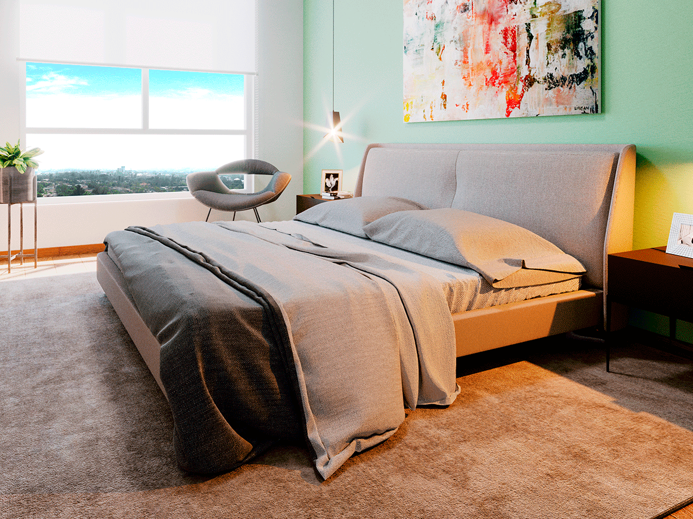
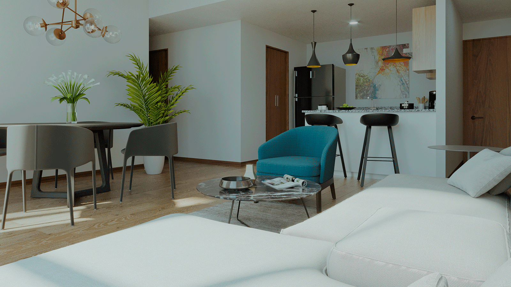

Elige tu apartamento

Adquirir un hogar que esté cerca del trabajo, en una zona segura, que brinde privacidad y aporte más a la calidad y estilo de vida,
significa lograr el óptimo equilibrio entre el tiempo dedicado a las responsabilidades y al ocio por eso elige el estilo que mejor
se acomode a tu personalidad tenemos varios diseños para que vivas de la mejor manera.
Ubicación estratégica y libre de congestionamiento vehicular
La torre de apartamentos de Tuwenvivir estará ubicada sobre
la Prolongación Juan Pablo.Esta zona se caracteriza por ser
segura y con accesos fáciles a vías principales. Además, están
cerca centros comerciales, centros de estudios, restaurantes, bancos,
estaciones de de recarga de gas, supermercados, entre otros establecimientos
necesarios para satisfacer necesidades básicas y disfrutar del tiempo libre.
Quizas te interese leer Click aqui
Diseño moderno y amenidades para disfrutar mejor el tiempo en casa

Altos Tower tiene un diseño moderno arquitectónico que armoniza con los diseños de interiores
planificados, así como con la distribución de los espacios. Los modelos: Panorama, Horizonte y
Buena Vista, tienen una área de 108 m², 91 m² y 74 m², respectivamente. Usted podrá elegir desde
el más amplio hasta el más confortable.
En el último nivel están las amenidades. Imagine tener su hogar en un apartamento en San Salvador,
donde después del trabajo pueda relajarse en las siguientes comodidades.